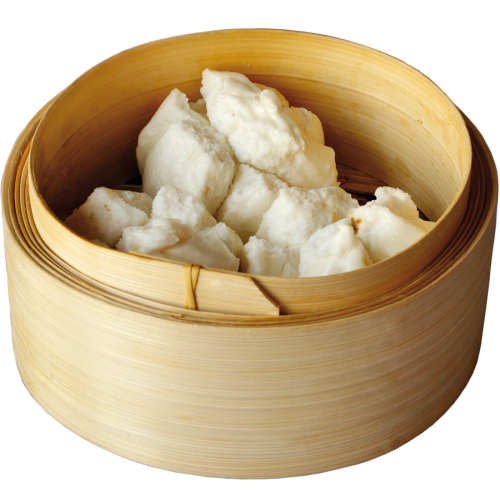

cha-shao-bao

ingredients
filling
- 1/2 tablespoon neutral cooking oil
- 1/2 onion, sliced
- 120g water
- 2 tablespoon oyster sauce
- 1 tablespoon char siu sauce
- 1 teaspoon dark soy sauce
- 1 teaspoon tapioca starch (or corn starch), mix with 3 tablespoon water
- 130g char siu (chinese bbq pork)
dough
- 350g bao flour/cake flour, pr all-purpose flour
- 2 tablespoon sugar
- 2 teaspoon baking power
- 2 teaspoon instant dry yeast
- 1+1/2 tablespoon neutral cooking oil
- 180g lukewarm water,adjust if necessary
check out the link below to view the original recipe
click me